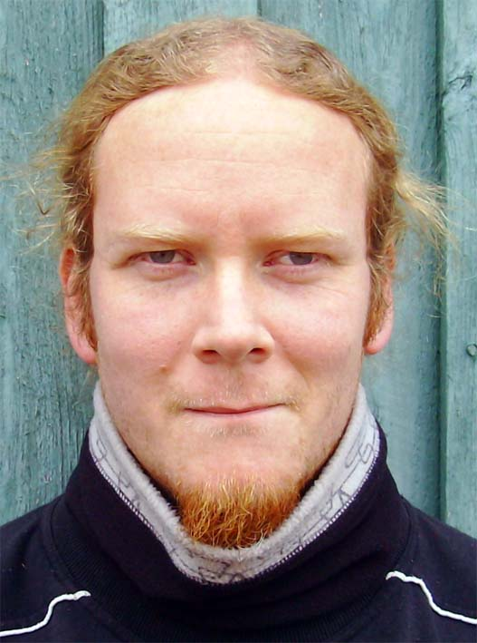

Min familj
Min fru Maria och våran son Leo som är 4år bor tillsammans i Gunnebo ca 1 mil söder om Västervik i östra Småland.
Vi har en en labrador som heter Molly som är 7 år.
Vara med familjen är något som jag värdesätter mycket så myskvällar är något för mig.
Tidigare programmering
- HTML - språket
- CSS
- CSS2
- CSS3
- Grundat i PHP
- Nuddat vid C#
Styrkor/Svagheter
- Styrkor
- Ambitiös
- Kreativ
- Viljestark
- Ger inte upp
- Svagheter
- Morgontrött
- Glad i kaffe
- Lat i vissa situationer(fråga min fru vilka)
Intressen
- Vara med familjen
- Musik, spelar trummor på hobbynivå
- Kod, kryptiskt skrivet men jag gnuggar gärna. Kan jag YIHOO...kan jag inte så vill jag gärna lösa problemet innan jag loggar av.
- Fotboll, är tränare för ett div4 lag i stan. Mindre nu som ni förstår :-)

Fick mig att söka?
Jag har länge gått i tankarna att ändra inriktning helt i mitt livJag har jobbat hela mitt vuxna liv med barn & ungdomar med problem.
Innan har jag gått en del design kurser inom Photoshop, Indesign och Illustrator och tycker även om att formge grafiskt. Men just att kunna behärska
hela spektrat inom webben är det jag verkligen vill.Både kunna lägga koden och sedan formge är mitt mål, så med den motiveringen ser jag denna utbildning
som ett fantastiskt steg i mitt liv. Efter avslutade studier
är målet att jobba inom branschen helt enkelt.
Mina favoritlänkar
- Webbpartner - Ett trevligt företag, många vänner jobbar.
- Wattnet - Mitt arbetslags hemsida.
- SvenskaFans - Ett mecka för oss fotbollsnördar.
http://www.webbpartner.se
http://www.wattnet.se
http://www.svenskafans.se